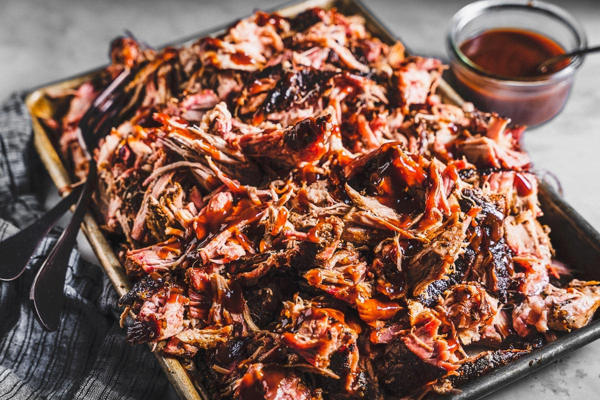

Here is a recipe for pulled pork
Pulled pork is a dish made from slow-cooked pork shoulder or pork butt. The meat is typically seasoned with a blend of spices, such as paprika, garlic powder, onion powder, cumin, and brown sugar, among others, before being cooked. The cooking process involves slow-roasting or smoking the pork for several hours until it becomes tender and easily shreddable. During cooking, the pork develops a rich flavor and becomes infused with the seasoning mixture. The slow cooking also allows the fat and connective tissue in the meat to break down, resulting in a succulent and flavorful final product. Once the pork is fully cooked, it is shredded or "pulled" into small, bite-sized pieces using forks or meat claws. The shredded pork is often mixed with barbecue sauce or other flavorful sauces to enhance its taste and moisture. Pulled pork can be served on its own as a main dish, or it can be used as a filling for sandwiches, tacos, burritos, or even as a topping for salads or pizzas. It's a versatile and delicious dish that's popular in many regions, particularly in the southern United States.